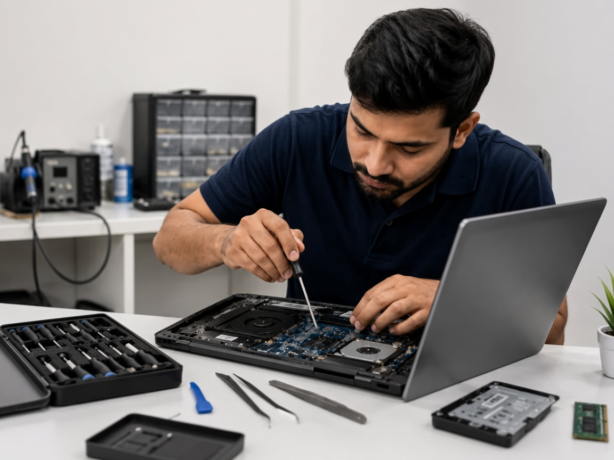
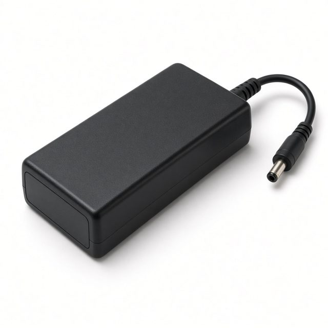
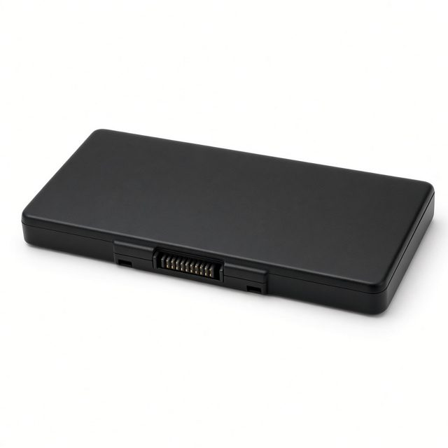
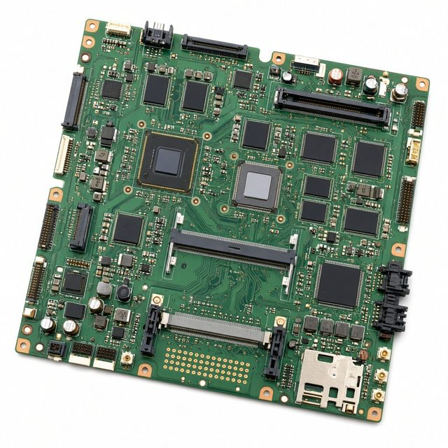
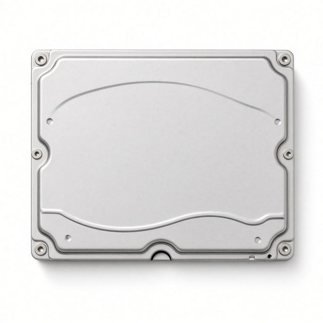
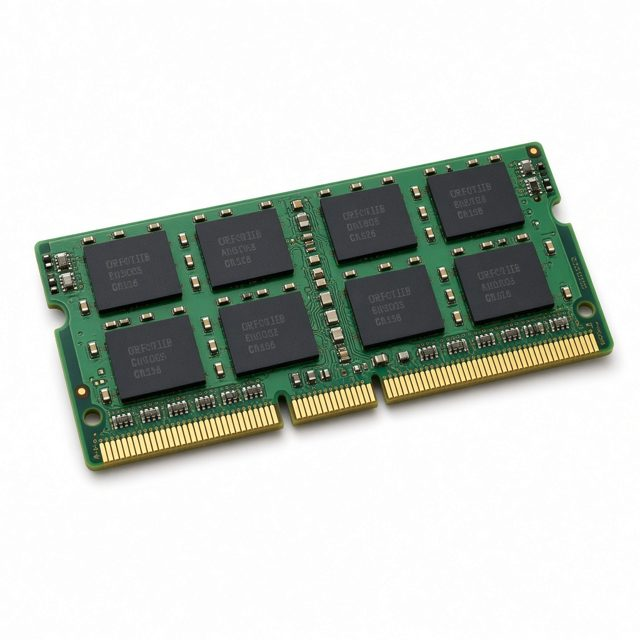
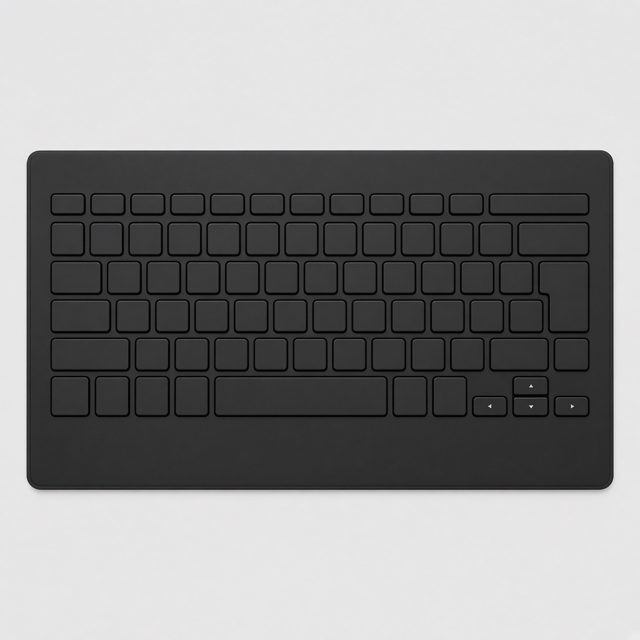
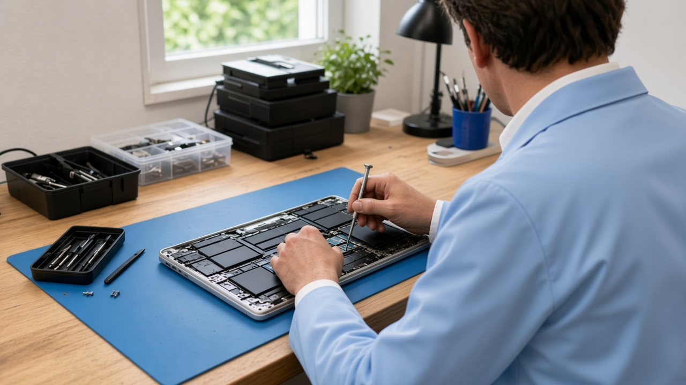

Expert Technicians
Dell, HP, Lenovo, Acer, ASUS, Apple, and MSI are repaired at the counter.
SAI Laptop Service · Electronic City, Bengaluru
SAI Laptop Service is a walk-in laptop repair service at Ganesh Complex, above the TVS showroom on Hosur Road, opposite Infosys. The shop board lists chargers, batteries, motherboards, hard disks, RAM, and keyboards, along with screens, Windows, overheating, and system cleanup.

The six parts pictured on the SAI Laptop Service board.

Charger
Battery
Motherboard
Hard Disk
RAM
KeyboardDell, HP, Lenovo, Acer, ASUS, Apple, and MSI are repaired at the counter.
Chargers, batteries, motherboards, drives, memory, and keyboards are fitted when that part is the fault. Ask which part is going in before work starts.
Call 099724 47766 before you travel. The counter will tell you when to drop the laptop.
There is no price list on this site. Ask for a quote on WhatsApp and decide before any paid work.
Laptop repair service in Electronic City, Bengaluru

Cracked, flickering, or black laptop screens are replaced at the Electronic City counter.

Swollen batteries and packs that no longer hold a charge are replaced. Call to check your model.

A slow or failing hard drive is replaced with an SSD or a new drive.

A clean Windows install is done when the laptop will not boot, or when you want a fresh start.
Bring the laptop to the walk-in counter at Ganesh Complex, Electronic City. Dell, HP, Lenovo, Acer, ASUS, Apple, and MSI are opened on the bench, and you hear the quote before any paid work.
Call us: +91 99724 47766★★★★★
Good, honest and prompt person worked very neatly and explained the issue clearly.
- santosh
★★★★★
services is good
- vishal kennith
★★★★★
Good job
- D venkatesan
★★★★★
The owner is as per the reviews mentioned. He will describe all the option and suggest the best one for you even if it's cheap. Would recommend to get checked here than other nearby stores first
- Google review 28 August 2025
★★★★★
I had a wonderful experience with this laptop service center. My laptop was running very slow and had heating issues, but the team diagnosed the problem quickly and explained everything in simple terms. The staff were professional, transparent about the costs, and kept me updated throughout the process. What impressed me most was their honesty, they didn’t try to push unnecessary repairs, only what was truly needed. The turnaround time was fast, and my laptop now works like new. They also gave me helpful tips on how to maintain it better.
- Google review 22 August 2025
★★★★★
Great service! They were able to diagnose and fix my laptop's problem quickly. The pricing was fair, and the technician was very helpful.
- Google review 13 August 2025
★★★★★
My laptop issue was diagnosed and fixed quickly. Store owner was polite, friendly, honest and answered all my queries, even gave some useful suggestions. They diagnosed the problem in front of me which is a refreshing change from other stores that usually take laptop to the back of stores for any diagnosis or fixes. Highly recommend this store for any laptop services
- Google review 9 August 2025
★★★★★
It was a good experience. My problem was resolved immediately. Bill is also provided. And the person handling the store was friendly. He also replied about other software related queries. Highly recommended (:
- Google review 16 July 2025
You arrive with one laptop, the one that has been failing in a bag or on a desk. The person who opens it is the person who names the fault. That talk happens before any paid work, and it happens in this room. Neighbours walk the machine in. There is no second bench down the road, and nobody is sent to pick the laptop up from a flat.
Bring it closed. If the adapter is still in the house, bring that as well, and bring the sign-in password, so a test after the work is not stuck on a lock screen. Leave the display, the key mat, and the pack inside the case. Taking them out on a kitchen table snaps clips and pulls cables, and those breaks sit on top of the fault you noticed.
Travel carefully when the glass is already starred. Leave the sheet in the frame. Do not lift the cracked layer, and do not press the star to watch it spread. A dark picture while the fans still turn can be the panel, the ribbon, or the board. Those three are separated on the bench. Pressing the lid in a car does not sort them out.
If the palm rest has pushed up, or the base will not sit flat on a table, stop using the laptop. Do not squeeze the cover shut, and do not pierce the pack. Unplug the adapter and carry the machine level.
A new panel is fitted only when the panel is what failed. That covers a crack, a flicker, a picture you can barely read, and a dark panel on a laptop that otherwise wakes. You hear that result before a panel is ordered. A pack that bulges, fades before the afternoon is over, or will not accept a charge is replaced when the pack is the fault. Ask which pack will be fitted, and agree before it goes in.
A key that sticks, types twice, or stays silent, a missing letter, or liquid across the deck can mean the keyboard has failed. Dusting the gaps is not a new keyboard. Changing a setting will not restore a key that broke, or a row that liquid has ruined. If the deck feels spongy after a spill, stop typing and bring the laptop while you still remember what landed on it.
A disk that drags, clicks, or fails can be swapped for an SSD or for another hard disk. No size is listed on this page. The disk depends on the machine on the bench and on the quote you hear before anyone orders it. If the files on the old disk matter, say so before the bottom cover comes off. This page does not promise those files on the new disk.
A laptop that only feels heavy may not need a disk at all. Pop-up windows, files that will not open, and a machine that slowed across a few weeks are handled by taking malware off and cleaning the system. That clean does not put a disk in the bay. Windows is installed clean when the laptop will not start, or when you want to begin again. The install is not a keyboard, and it is not a pack. Mention every fault you can see, including starred glass or a fading pack, so the quote lists each one.
Roaring fans, a shutdown in the middle of a call, and heat through the palm rest are followed back to the fan and the heat sink, then repaired. A shutdown on its own is not a dead pack, and it is not a failed board. The bench says which of those it found, and the quote names that finding.
The wall shows a charger, a battery, a hard disk, RAM, a keyboard, and a motherboard. One of those is fitted only when it is the fault. An adapter that no longer feeds the laptop, memory that makes the picture freeze, and a board in a machine that will not start or that runs poorly are named after the look, not before it. A dark picture with the fans moving can still be the panel or the cable. A machine that stays off at the power button can still be a pack that refuses a charge. Ask for the name of the part before you agree.
When the work is finished, you leave with the same laptop. The counter does not trade it for a different machine, and it does not turn the visit into a sale of a new one. A longer walk through what to carry, and how a fault is named, is in the latest article. The full list of work for this counter is on the services page.
Cracked, flickering, or black laptop screens are inspected at the counter. The screen is replaced when that is the fault.
Swollen packs, batteries that die early, and packs that stop taking a charge are replaced. Keys that stick, repeat, or stay dead, missing letters, and a spill on the key mat are keyboard jobs. The part is fitted when that part is the fault. Ask which part is going in before work starts.
A slow or failing hard drive is replaced with an SSD or a new drive. This site does not publish drive sizes. The part depends on the laptop and on the quote.
Loud fans, sudden shutdowns, and heat through the palm rest are traced to the fan and heat sink, then repaired. Pop-ups, locked files, and a machine that has become slow are treated by removing malware and cleaning the system.
Yes. This site does not publish a price list. Call or WhatsApp 099724 47766, describe the fault, and ask for the quote before any paid work.